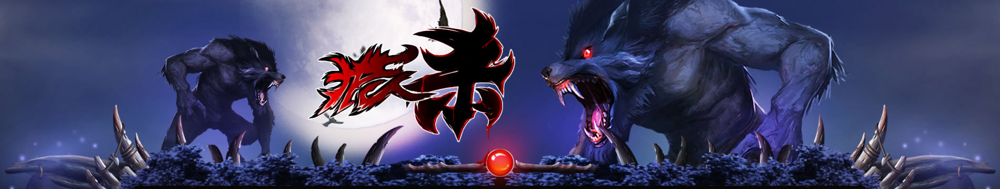
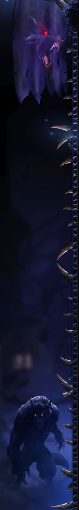
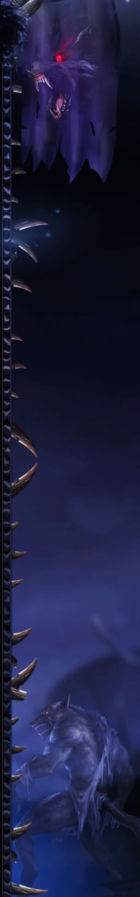

狼人起源于很久以前的欧洲，那时候由于瘟疫，村子里只活下来一个年轻人。他的后代有三个（不知道是和谁恋爱生的孩子，因为是“只活下来一个年轻人”？？？），一个被毒蝙蝠咬了，一个让毒狼咬了，只有一个比较正常。前两位一个是吸血鬼的祖先，一个是狼人祖先。
狼人可以活到100岁，肉食，月圆之夜会变成狼的形态，平时却和普通人一样。 鉴别狼人的唯一方法是：狼人在人的状态时中指与无名指的长度相同，看到这儿，请大家互相检查，如有符合此条件的人，请悄悄报警。
狼人害怕银制品，液态的硝酸银可以使他们丧失战斗力！ 请善良的村民夜路自备。如果实在找不到硝酸银的话，一般的银器也可以使狼人感到巨大的灼痛。 被狼人咬伤不死的人会变成狼人，请记住，平常的日子里狼人看起来和我们一样善良， 有很多就生活在我们身边！他们行为举止温文尔雅，甚至穿西装戴眼镜儿说话没有脏字儿……但也有很多狼人生活在郊外森林里。
狼人变身后是没有理智的，杀了人也不知道。 但少数理智的善良的狼人为了控制自己不伤害人，晚上变身的时候会去一个荒无人烟的地方，避免伤害人类。 所以，如果你身边有那种喜欢晚上去森林里，早晨回来，并周期性重复这个行为的人，有可能就是一个善良的狼人。
据说，狼人变身的时候因身体结构发生翻天覆地的变化而感到非常痛苦， 相当于重度抽筋儿的感觉（描述这个感受的人如果不是狼人，可能有臆想症……）。
狼人可以活到100岁，肉食，月圆之夜会变成狼的形态，平时却和普通人一样。 鉴别狼人的唯一方法是：狼人在人的状态时中指与无名指的长度相同，看到这儿，请大家互相检查，如有符合此条件的人，请悄悄报警。
狼人害怕银制品，液态的硝酸银可以使他们丧失战斗力！ 请善良的村民夜路自备。如果实在找不到硝酸银的话，一般的银器也可以使狼人感到巨大的灼痛。 被狼人咬伤不死的人会变成狼人，请记住，平常的日子里狼人看起来和我们一样善良， 有很多就生活在我们身边！他们行为举止温文尔雅，甚至穿西装戴眼镜儿说话没有脏字儿……但也有很多狼人生活在郊外森林里。
狼人变身后是没有理智的，杀了人也不知道。 但少数理智的善良的狼人为了控制自己不伤害人，晚上变身的时候会去一个荒无人烟的地方，避免伤害人类。 所以，如果你身边有那种喜欢晚上去森林里，早晨回来，并周期性重复这个行为的人，有可能就是一个善良的狼人。
据说，狼人变身的时候因身体结构发生翻天覆地的变化而感到非常痛苦， 相当于重度抽筋儿的感觉（描述这个感受的人如果不是狼人，可能有臆想症……）。
